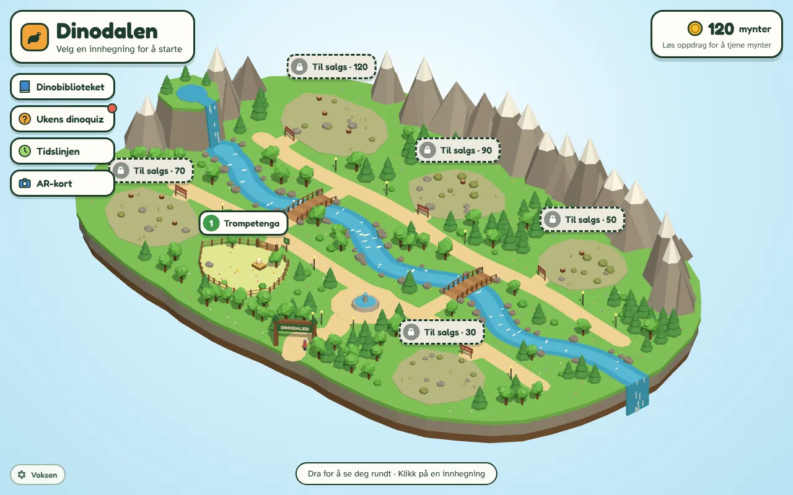
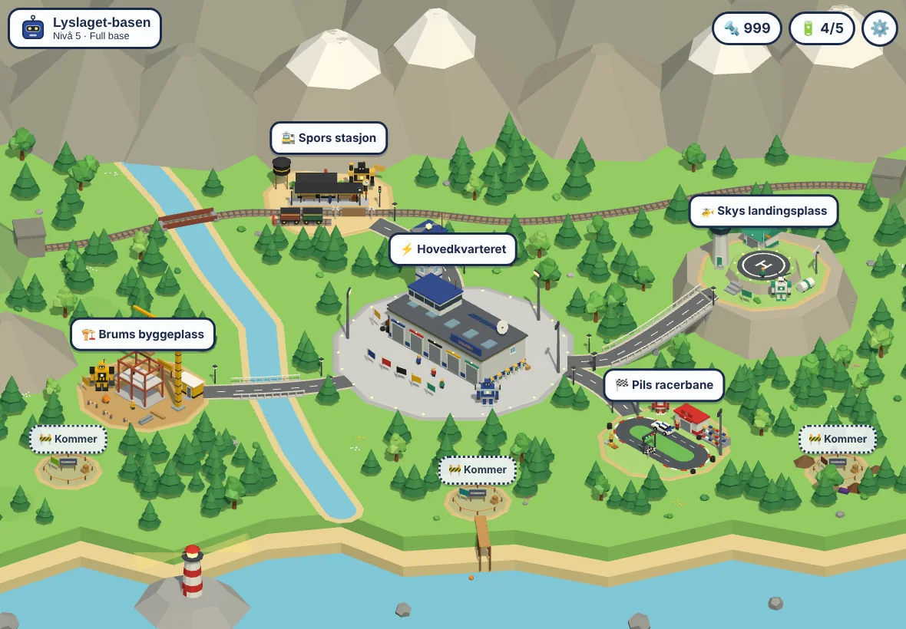
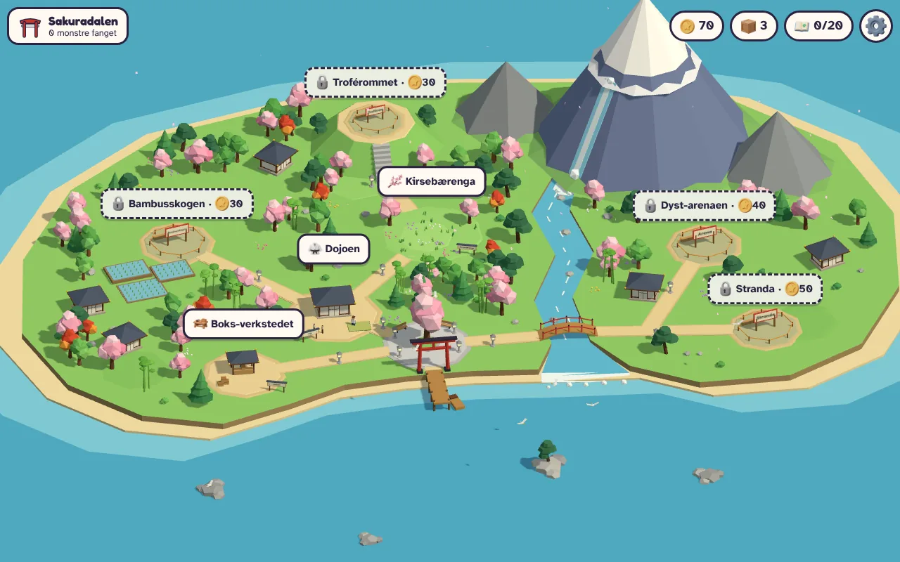
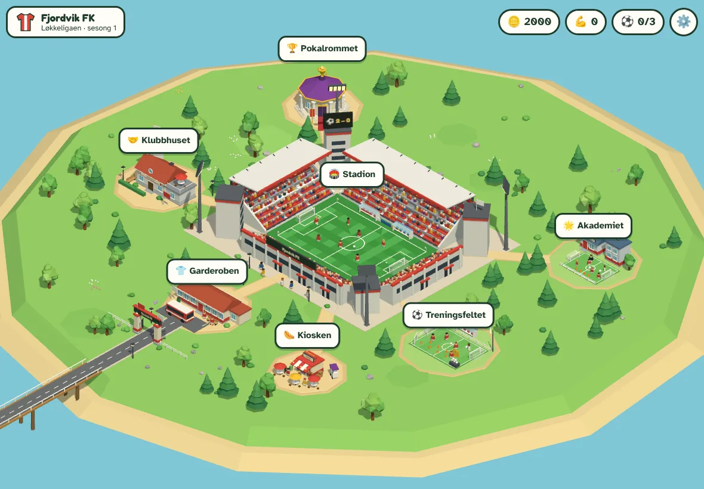
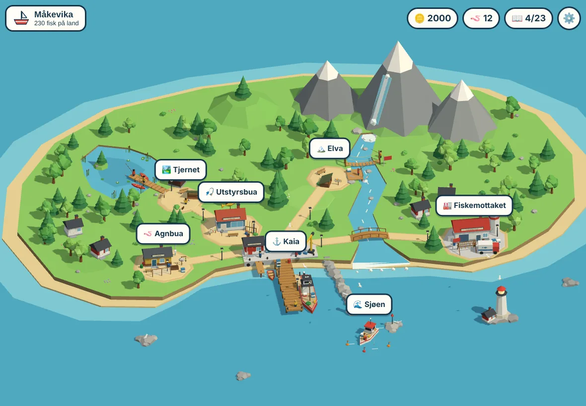
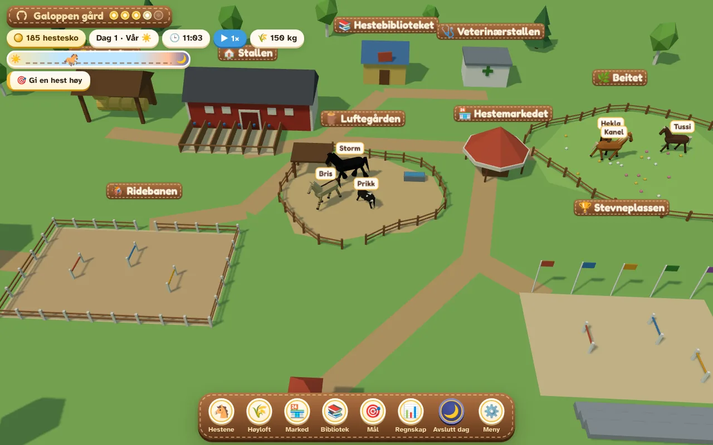

Dinosaurer
Dinoparken
Eleven bygger sin egen dinosaurpark. Mynter tjenes bare på oppgaver, og brukes til nye innhegninger og egg som klekkes.
Øver på: klokka, penger, tiervenner, lyder i ord og lesing.
Prøv DinoparkenSe før du bestiller
Gå en tur i verdenene før du bestemmer deg. Du trenger ingen kode, og ingenting blir lagret.
Fire eksempler
Verdenene er laget for nettbrett og PC. Trykk deg rundt, løs noen oppgaver og bygg ut.
Eleven bygger sin egen dinosaurpark. Mynter tjenes bare på oppgaver, og brukes til nye innhegninger og egg som klekkes.
Øver på: klokka, penger, tiervenner, lyder i ord og lesing.
Prøv Dinoparken
De samme oppgavene som i Dinoparken, i en elvedal med seks andre dinosaurer. Én interesse kan bli til flere ulike verdener.
Øver på: klokka, penger, tiervenner, lyder i ord og lesing.
Prøv Dinodalen
Eleven bygger ut basen til robotene i Lyslaget. Hver løst oppgave gir skruer, og skruene blir til hovedkvarter, stasjon og racerbane.
Øver på: matte, lesing, skriving, klokka og sosiale ferdigheter.
Prøv Lyslaget
Eleven fanger monstre i bokser, trener dem i dojoen og møter vokterne i dalen til oppgaveduell.
Øver på: klokka, tallinje, måling, kalkulator, engelsk og hverdagsferdigheter.
Prøv SakuradalenGreit å vite
Du går rett inn. I en ekte verden logger eleven inn med sin egen kode, og framgangen følger koden fra enhet til enhet.
Det du gjør i prøven, blir borte når du lukker fanen. Ingen framgang sendes til Tavleloftet. I en ekte verden lagres alt på elevens kode.
Du får noen ekstra mynter fra start, så du rekker å bygge noe. Eleven må tjene alt selv ved å løse oppgaver.
Prøven varer i 15 minutter, så du rekker å se deg rundt. En ekte verden er åpen 30 minutter hver dag som standard, og den voksne kan endre tiden.
Oppgavene du møter her er laget for elevene som bruker disse verdenene. Din elev får sine egne, også når dere velger en verden som finnes fra før.
Flere temaer
Verdenene på denne siden er eksempler. Eleven kan også få en helt ny verden i sitt eget tema. Disse tre er bygget som rammer, og oppgavene lages når en elev skal bruke dem.

Eleven leder et lag opp gjennom divisjonene, bygger ut stadion, trener og kjøper spillere.
Kan bygges for din elev
Eleven fisker i sjø, elv og ferskvann, og oppgraderer stenger, sluker, kai og båter.
Kan bygges for din elev
Eleven driver sin egen hestegård: steller hestene, holder ridetimer, rir stevner og bygger ut gården.
Kan bygges for din elevFor den voksne
Med hver verden følger en voksenkode. Den åpner en framgangsrapport som viser hvilke mål eleven har nådd og når, hva eleven er på vei mot, og hva som trenger mer øving. Rapporten kan skrives ut eller lagres som PDF.
Funnet en verden som passer? Fortell hva eleven liker og hva som skal øves, så får du en skisse. Jeg trenger ingen navn og ingen diagnoser.